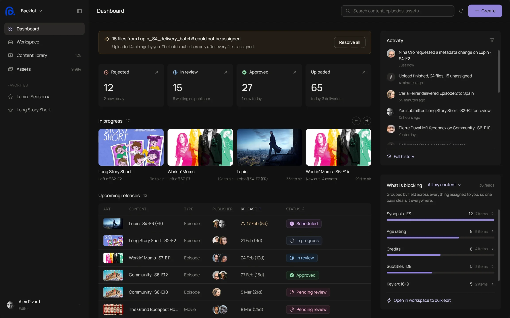
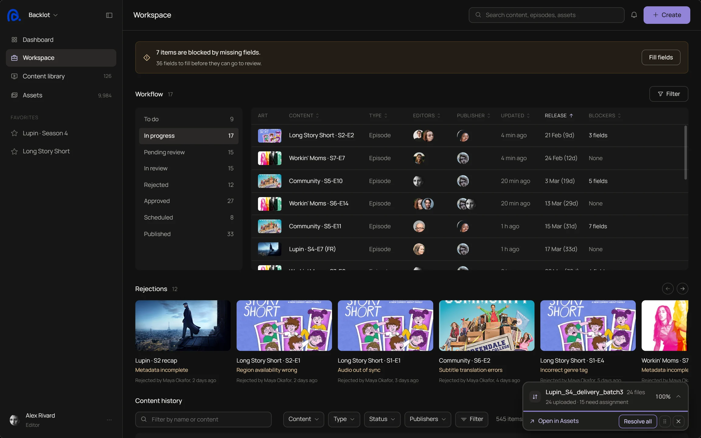

Backlot, a CMS for streaming services
Rejections that tell the editor exactly what to fix
Backlot is where streaming services prepare films and series for release, one region at a time. I designed the review loop between editor and publisher, so a rejection is a list of reasons pinned to fields, not a vague note.

The work is not hard. The loop is.
The problem
Every time something comes back, both sides redo work, and the release date does not move. The editor guesses what to fix, the publisher checks everything again.
Research
Eight tools, and none closes the loop
Headless CMSs let you comment on a field. Review tools let you approve a frame. None turns a rejection into reasons that are counted and checked before the next review.
Headless CMS
Comments sit on a field, but a rejection is still one free-text note.
Contentful, Contentstack, Strapi, DirectusBacklot
Each reason is pinned to a field, has a category, is fixed on its own and is counted for the next check.
5 of 5 criteriaReview tools
Precise notes on a frame, but no metadata, regions or release rules.
Frame.io, Ziflow, BrightcoveWhere Backlot loses: Frame.io pins a note to the exact frame. Full comparison table follows here.
Two roles
One episode, two people asking different questions
“What exactly do I fix, and is it ready now?”
Works region by region, many episodes at once.
- Which field each reason is on
- What the region still needs
- Submit only what changed
“What changed since I last looked?”
Decides before a release date, can't re-check everything.
- Only the fields that came back
- Who changed what and when
- Reject with reasons, not a note
Decision 02
A rejection is a list of reasons
Each reason has a field and a category. The editor resolves them one by one, the publisher re-checks only those fields, and every reason is counted.

Workspace: rejections arrive as cards, and each one opens the field it is about.
Iterations
Some things I removed
Each one worked on paper, and each one cost the editor something.
AI that fills fields
A wrong auto-fill is an error nobody sees. AI now flags, and a person decides.
Region as a filter
Almost every field changes by region, so region became the scope you work in.
One rejection comment
A single note left the editor guessing. It became reasons pinned to fields.
Reflection
What I would test next
Do the categories match reality?
Sit with publishers and check that the rejection categories cover what they actually send back.
Do editors trust the split?
Fields they fill vs fields the upload filled. If they re-check everything, the split failed.
Next, 02 / BİLGE
Customs approvals where every change carries a reason.
Pending Approval
Thanks for reading. If the work fits your team, I'd like to hear about the role.
a.egecoskun@gmail.com